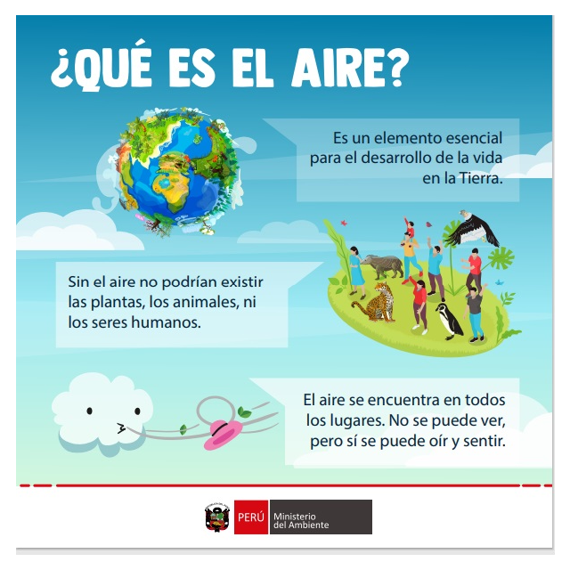
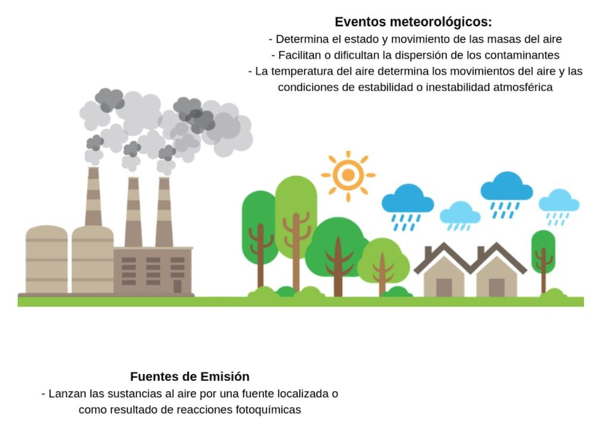
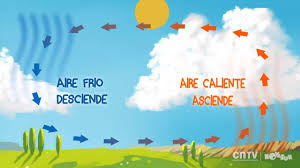
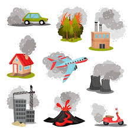
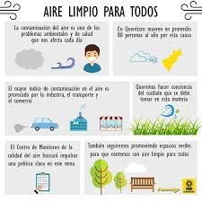

AIRE
¡¡Hola a todos!!, hoy vamos a trabajar el elemento AIRE. Este elemento está relacionado con la libertad, la creatividad y el movimiento. A través de él, exploraremos cómo influye en nuestro día a día, tanto en lo físico como en lo emocional. Así que prepárate para descubrir cómo el aire puede inspirarnos y ayudarnos a liberar nuestras ideas.
Objetivo general: El objetivo general es que los alumnos comprendan lo que es el aire, que vivimos rodeados de el y la importancia que tiene en nuestro día a día.
Objetivos específicos:
- Compresión de que es el aire
- Conocer la composición del aire, no es solo oxígeno.
- Conexión del aire y la naturaleza.
- Importancia de cuidar el aire.
¿QUÉ ES EL AIRE?
El aire es una mezcla de gases que nos rodea y que no podemos ver, pero que necesitamos para vivir. Está formado principalmente por oxígeno, que es lo que respiramos, y nitrógeno, que es el gas que ocupa la mayor parte del aire. El aire también tiene pequeñas cantidades de otros gases como el dióxido de carbono. Aunque no lo veamos, el aire ocupa espacio y tiene peso. Sin aire, no podríamos respirar ni vivir (Rusoke-Dierich, 2018).

COMPASICIÓN DEL AIRE
El aire está formado por varios gases que no podemos ver, pero que son muy importantes para que podamos vivir. Los principales gases en el aire son:
- Nitrógeno (78%): Es el gas que más hay en el aire, pero no lo usamos directamente.
- Oxígeno (21%): Este es el gas que respiramos para poder vivir y tener energía.
- Dióxido de carbono (menos del 1%): Aunque está en poca cantidad, las plantas lo usan para crecer.
También hay pequeñas cantidades de otros gases, como el argón, y vapor de agua, que cambia dependiendo del clima. Aunque no podamos verlo, el aire es muy importante para todos los seres vivos (Ánjel, 2020).
PROPIEDADES DEL AIRE
- El aire tiene peso: Aunque no lo podamos ver, el aire pesa. Si pudiéramos pesar el aire en una habitación, veríamos que tiene un peso, ¡aunque no lo notemos!
- El aire ocupa espacio: Aunque no lo veamos, el aire llena todos los lugares. Por ejemplo, si metemos una pelota inflada en una caja, el aire dentro de la pelota ocupa espacio, y el aire fuera también lo llena.
- El aire puede moverse: Cuando el aire se mueve, lo sentimos como viento. El viento es solo aire moviéndose rápidamente.
- El aire es necesario para respirar: El oxígeno que hay en el aire es el gas que necesitamos para respirar y vivir. Sin aire, no podríamos estar vivos.
- El aire puede cambiar de temperatura: A veces el aire está caliente, como en verano, y otras veces está frío, como en invierno. El aire también puede ser húmedo o seco, dependiendo de la cantidad de vapor de agua que tenga.
- El aire puede presionar: El aire ejerce una presión, que es la fuerza que hace el aire sobre los objetos. Esta presión se llama "presión atmosférica", y es lo que sentimos cuando el aire nos empuja, aunque no lo veamos.
¿POR QUÉ EL AIRE ES IMPORTANTE?
- Para respirar: Todos los seres vivos, como nosotros, los animales y las plantas, necesitamos aire para vivir. El aire tiene un gas llamado oxígeno, que es lo que usamos para respirar. Sin oxígeno, no podríamos vivir. Las plantas también lo usan, pero en vez de oxígeno, ellas liberan oxígeno cuando hacen su comida (Kietzmann, 2019).
- Para producir energía: Cuando respiramos, el oxígeno del aire entra en nuestro cuerpo y nos ayuda a obtener la energía que necesitamos para jugar, estudiar o hacer cualquier cosa. Sin aire, no podríamos tener energía (Avunduk, 2024).
- Para el crecimiento de las plantas: Las plantas también necesitan aire, no solo oxígeno, sino un gas llamado dióxido de carbono. Las plantas lo usan para hacer su comida a través de un proceso llamado fotosíntesis. Sin aire, las plantas no podrían crecer y producir comida para nosotros (Lukianchuk, 2024).
- Para mantener el equilibrio de la naturaleza: El aire ayuda a que todo en la naturaleza esté equilibrado. Las plantas, los animales y los seres humanos dependen del aire para mantenerse vivos y para que todo funcione correctamente en el planeta (Nithya, 2017).
EL AIRE Y EL CLIMA
El aire tiene mucho que ver con el clima, porque ayuda a que el tiempo cambie de un lugar a otro (Jacob, 2009). Aquí te explico cómo influye:
- El aire caliente y el aire frío: El aire caliente sube hacia arriba, y el aire frío baja. Esto hace que se formen vientos, que son grandes movimientos de aire. Los vientos pueden hacer que el clima sea más cálido o más frío.
- La humedad: El aire también tiene vapor de agua (humedad). Cuando el aire está muy húmedo, puede llover o nevar, porque el vapor de agua se convierte en gotas o cristales. Así, el aire influye en las lluvias y otras condiciones del clima.
- El aire en diferentes lugares: En algunos lugares el aire es más caliente (como cerca del ecuador), y en otros es más frío (como en los polos). Esto crea diferentes tipos de clima en todo el planeta, como los climas cálidos, fríos o templados.

TIPOS DE VIENTOS (Hedin, 1996).
- Viento suave o brisa: Es un viento ligero, que no es muy fuerte. Es el que sentimos cuando estamos en la playa o en un día tranquilo.
- Viento moderado: Es un viento que ya se siente más fuerte, pero no es tan intenso como una tormenta. Puede mover hojas o ramas de los árboles.
- Viento fuerte: Este viento ya es más fuerte y puede hacer que los árboles se muevan o que algo ligero vuele. Es como cuando hay viento en un día de tormenta.
- Tornado: Un tornado es un viento extremadamente fuerte que gira en círculos. Puede ser muy peligroso y arrastrar cosas por el aire. Afortunadamente, no ocurren todo el tiempo, pero cuando suceden, son muy fuertes.
- Huracán: Un huracán es un viento muy fuerte que se forma sobre el mar y puede causar grandes daños. Es como un tornado, pero mucho más grande y con lluvia fuerte.

LA CONTAMINACIÓN DEL AIRE
La contaminación del aire ocurre cuando hay sustancias dañinas en el aire que lo hacen sucio y peligroso para la salud. Estas sustancias pueden venir de diferentes fuentes, como los autos, las fábricas, el uso de energía y hasta de los incendios. Algunas de estas sustancias son gases, como el dióxido de carbono y el monóxido de carbono, o partículas muy pequeñas que no podemos ver, pero que pueden enfermarnos.
La contaminación del aire puede causar problemas de salud, como problemas respiratorios (dificultad para respirar), tos o enfermedades como el asma. También afecta a las plantas y los animales.
Es muy importante cuidar el aire, plantando más árboles, usando menos autos y ahorrando energía, para que el aire esté limpio y todos podamos vivir de manera más saludable (Feng, 2024).

LA IMPORTANCIA DE CUIDAR EL AIRE
Es muy importante cuidar el aire porque es necesario para que todos podamos vivir. El aire tiene oxígeno, que es lo que necesitamos para respirar. Si el aire está limpio, podemos estar saludables, y las plantas y los animales también pueden vivir bien.
Cuando el aire está contaminado, nos puede hacer daño, provocando enfermedades como problemas para respirar. Además, la contaminación del aire también afecta a las plantas, que necesitan un aire limpio para crecer y producir comida (Gawade , 2020).
Por eso, debemos no contaminar el aire, ahorrar energía, usar menos el auto y plantar árboles, porque todo eso ayuda a mantener el aire limpio y saludable para todos. ¡Si cuidamos el aire, cuidamos nuestra salud y la de nuestro planeta!

REFERENCIAS
Ánjel, M. (2020). Descubriendo el aire que respiramos. , 23, 18-23.
Avunduk, S. (2024). Air Cleaning Plants. ENERGY, ENVIRONMENT & STORAGE. https://doi.org/10.52924/jtnj4189.
Feng, T., Sun, Y., Shi, Y., , J., Feng, C., & Chen, Z. (2024). Air pollution control policies and impacts: A review. Renewable and Sustainable Energy Reviews. https://doi.org/10.1016/j.rser.2023.114071.
Gawade, A., Sanap, A., Baviskar, V., Jahnige, R., Zhang, Q., & Zhu, T. (2020). Indoor Air Quality Improvement. ArXiv, abs/2012.15387.
Hedin, A., Fleming, E., Manson, A., Schmidlin, F., Avery, S., Clark, R., Franke, S., Fraser, G., Tsuda, T., Vial, F., & Vincent, R. (1996). Empirical wind model for the upper, middle and lower atmosphere. Journal of Atmospheric and Solar-Terrestrial Physics, 58, 1421-1447. https://doi.org/10.1016/0021-9169(95)00122-0.
Jacob, D., & Winner, D. (2009). Effect of Climate Change on Air Quality. Atmospheric Environment, 43, 51-63. https://doi.org/10.1016/J.ATMOSENV.2008.09.051.
Kietzmann, T. (2019). The air that we breeze: From ‘Noble’ discoveries of a general oxygen‐sensing principle to its clinical use. Acta Physiologica, 228. https://doi.org/10.1111/apha.13416.
Lukianchuk, N., & Tretyak, P. (2024). Environmental Forming Health Improving Effect of Tree and Shrub Vegetation as a Sanogenic Factor on Air: View on the Problem. Lviv Clinical Bulletin. https://doi.org/10.25040/lkv2024.01.043.
Nithya, R. (2017). Use of Tree Species in Controlling Environmental Pollution-A Review. International Journal of Current Microbiology and Applied Sciences, 6, 893-899. https://doi.org/10.20546/IJCMAS.2017.604.113.